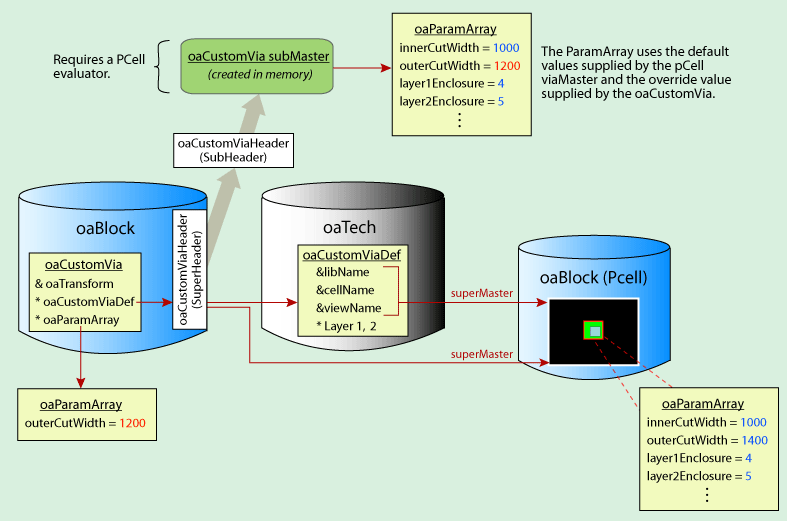
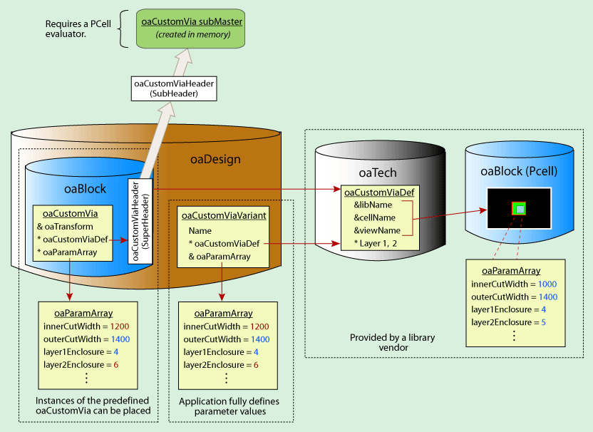

|
 |
 |
||||||
|
|
|
||||||
This document describes:
OpenAccess provides several approaches for representing vias. The approach that an application should use depends on the intended use model for the via. There are also memory usage issues to consider.
The following table can help you decide what type of via to use.
| Type of Via | Comments |
| Standard Via | Uses the fixed set of parameters defined in the oaViaParam object. Applications set the parameter values to specify the geometric layout of the via. Standard vias are more efficient than custom vias because they do not require accessing a separate via master design and do not require an external evaluation to determine the geometries. |
| Custom Via | The contents of another master design database determines the via geometry. If that master design is a PCell, the application can affect the geometric layout of the via by specifying parameter values using oaParam objects. Because OpenAccess must access external, on-disk database files for oaCustomVias, they are not as high-performance as oaStdVias, which are available in virtual memory. |
| Standard Via Variant | Represents a predefined standard via parameterization. This is useful for applications that require a fully specified via. In addition, applications can use this type of via to automatically generate vias. |
| Custom Via Variant | Represents a predefined custom via parameterization. |
In OpenAccess, a standard via (oaStdVia) is one that can be constructed using a fixed set of predefined via parameters. These parameters and their values are represented by the oaViaParam object. Each parameter value in an oaViaParam has a flag that indicates whether or not it should be used, or if a default value from the oaStViaDef should be used instead.
The following via parameters are available for oaStdVias:
To create an oaStdVia, the application should first create a standard via definition (oaStdViaDef) by supplying
A single oaStdViaDef can be used to generate a family of standard vias for a particular set of connected layers. All of the values in the oaViaParam on the oaStdVia are used as defaults for the oaStdVias that are built with that oaStdViaDef. The default flags in the oaViaParam used here have no effect.
To override any of the parameters in the oaStdViaDef default set, a customized oaViaParam object is supplied when the oaStdVia is created. A parameter value (set to a non-default value so that its flag bit is cleared) in the customized oaViaParam object overrrides the corresponding default parameter of the oaStdViaDef.
The resulting oaViaParam has a mixture of default parameters from the oaStdViaDef (with corresponding default flags set) and non-default parameters from the personalized oaViaParam object (with corresponding default flags cleared).
When OpenAccess creates an oaStdVia in a design, it gets the corresponding header and creates a subMaster of the oaStdVia in memory. The in-memory subMaster has the same effective oaViaParam that is applied to the oaStdVia (the oaViaParam that is created by resolving the default oaViaParam from the oaStdViaDef with any overriding values supplied in the customized oaViaParam used in the creation of the oaStdVia).
The oaStdVia::getParams function takes a reference oaViaParam object as an argument. oaStdVia::getParams will set that oaViaParam's parameter values to the effective oaViaParam values that have been set for the oaStdVia, as described in the preceding paragraph. For any parameter that has assumed the default setting from an oaStdViaDef, oaViaParam::hasDefault will return true. For any parameter whose default value has been overridden by a non-default setting from a personalized oaViaParam, oaViaParam::hasDefault will return false.
In the following example, the customized oaViaParam of the oaStdVia contains one overriding value, that of layer1Enclosure.
The following code demonstrates this:
// Get the technology database attached to the library
oaTech *tech = oaTech::find(oaScalarName(oaNativeNS(), getLibName()));
// Get via layers from the technology database
oaPhysicalLayer *poly = oaPhysicalLayer::find(tech, "Poly");
oaPhysicalLayer *imp1 = oaPhysicalLayer::find(tech, "Nimp");
oaPhysicalLayer *imp2 = oaPhysicalLayer::find(tech, "Pimp");
oaPhysicalLayer *metal1 = oaPhysicalLayer::find(tech, "Metal1");
oaPhysicalLayer *cut = oaPhysicalLayer::find(tech, "Via1");
// Set up the oaStdViaDef parameters
oaViaParam stdViaDefParam;
stdViaDefParam.setCutLayer(cut->getNumber());
stdViaDefParam.setCutWidth(1000);
stdViaDefParam.setCutHeight(1000);
stdViaDefParam.setCutSpacing(100);
stdViaDefParam.setCutColumns(4);
// Create the oaStdViaDef
oaStdViaDef *myStdViaDef =
oaStdViaDef::create(tech, oaString("myStdViaDef"), poly, metal1,
stdViaDefParam, imp1, imp2);
// Set up the overriding parameters for the oaStdVia
oaViaParam overrideViaParam;
overrideViaParam.setLayer1Enc(oaVector(10, 10));
// Create the oaStdVia
oaTransform zeroTrans(oaPoint(0, 0), oacR0);
oaStdVia::create(blk, myStdViaDef, zeroTrans, &overrideViaParam);
When a new oaViaParam is constructed, the parameter field values are initialized to generic default values as follows:
Each oaViaParam has a set of default flags as discussed in Overriding Default Parameter Values. On construction, an oaViaParam object has all default parameter values, and all of its default flag bits are set. When you explicitly set a particular parameter value, the corresponding flag is cleared, indicating that that parameter has a non-default value.
In the previous figure, the customized oaViaParam object for creating the oaStdVia was generated by initializing an oaViaParam object and modifying a single parameter value, layer1Enclosure, to a non-default value. The default flag bit for layer1Enclosure was cleared, indicating that parameter should override the default setting from the oaStdViaDef object when an oaStdVia is created.
You can set a parameter from a customized oaViaParam object back to its original default value with oaViaParam::setDefault. The parameter's default flag bit is set, it is ignored in the creation of the oaStdVia, and the default parameter setting from the oaStdViaDef object is applied.
When creating a new oaStdViaDef, supply a customized oaViaParam object, as described in Overriding Default Parameter Values. The parameters from the oaViaParam object supplied to the oaStdViaDef::create function establish a baseline default set of parameters, which can be used to create a family of standard vias.
The oaStdViaDef::getParams function takes a reference to an oaViaParam object as an argument. The oaStdViaDef::getParams function sets that oaViaParam's parameter values to the baseline default values that were established for the oaStdViaDef object. The default flag bit for each of these parameters is set; the oaViaParam::hasDefault function returns true for each of the parameter settings.
A custom via (oaCustomVia) references a custom via definition (oaCustomViaDef) that specifies the via geometry using the contents of a separate master design. If the master design is parameterized (a PCell), you can customize the geometries of the oaCustomVia by providing an array of parameters (oaParamArray) that override some of the parameter values. Note that an oaCustomVia is very similar in behavior to an oaInst.
An oaCustomViaDef object has a unique name and is associated with a master design and two layers. A custom via in a route must point to an oaCustomViaDef object in the technology database associated with the design containing the route. For more information about the benefits and restrictions of oaCustomVias, refer to the detailed description for the oaCustomViaDef class.
When creating an oaCustomVia, provide a pointer to the oaCustomViaDef that references the via master you want to use.
The following shows an oaCustomVia that references a design that is not parameterized.
When an oaCustomViaDef references a PCell via, the oaCustomVia can pass in an oaParamArray to override the parameter values of the PCell. In the following example, the oaCustomVia overrides the value for the outerCutWidth parameter.

Note: In order to create the oaCustomVia subMaster, a PCell evaluator plug-in is is required.
Use the oaParamArray constructor to create a new oaParamArray. Individual parameters can then be added with the inherited oaParamArray::append function.
When creating a new oaCustomViaDef, provide the lib/cell/view of the custom via to use as the master, and provide the layers.
OpenAccess lets you store predefined parameterizations of oaStdVias and oaCustomVias, known as via variants (oaViaVariants). An oaViaVariant object represents a named pairing of an oaViaDef reference and a fully specified set of via parameters.
oaViaVariants can be stored in oaTech or oaDesign databases. If the oaViaVariant should be available for any design in the technology, it must be stored in a technology database. If the oaViaVariant is design specific, it should be stored in the design database. When translating, a via variant specified in a LEF file is stored in a technology database, whereas a via variant in a DEF file is stored in a design database (unless the same variant already exists in the technology database). For more information about how via variants are imported into OpenAccess using the LEF/DEF translators, refer to LEF/DEF to OpenAccess Mapping.
Within a single database, each oaViaVariant must have:
If an oaViaVariant is stored in a technology database that is part of a set of incremental technology databases, then these rules apply across the graph of reference technology databases.
A standard via variant (oaStdViaVariant) is like an oaStdVia in which the parameter values are predefined by the application. This is particularly useful for applications, such as digital routers, that require a fully specified via.
An oaStdViaVariant is comprised of

In the following example, a library vendor supplies an oaStdViaDef in the technology database. The application creates an oaStdViaVariant that uses the provided oaStdViaDef and defines a complete set of parameter values. Now, oaStdVias can be created using the oaStdViaDef from the oaTech and the stored oaViaParam of the oaStdViaVariant.
An oaViaParam::setAllNonDefault function is available for specifying that all parameter values should be considered as non-default values.
A custom via variant (oaCustomViaVariant) can be thought of as an oaCustomVia in which the parameters are predefined by the application. An oaCustomViaVariant is comprised of
An oaCustomViaVariant can be created in a design database if it applies to specific design, or in a technology database if it should be available to multiple designs.

In the following example, a library vendor supplies an oaCustomViaDef in the technology database. The application creates an oaCustomViaVariant that uses the provided oaCustomViaDef and defines a complete set of parameter values. Now, oaCustomVias can be created by passing in the oaCustomViaDef from the oaTech along with the stored oaParamArray of the oaCustomViaVariant.

Applications can use the oacValidRoutingVias constraint to list the valid routing vias for a design. This constraint can simply provide a list of oaViaDefs. In a more powerful usage, the constraint can provide a list of the specifications of vias that are valid for the design.
The oaViaTopology utility object is used to create an array of oaViaDefs and/or oaViaVariants. This array is used for the oacValidRoutingVias constraint.
Applications can also create user-defined constraint groups to specify the valid vias for a design. Refer to Specialized Constraints Groups in Creating and Modeling Process Rules and Constraints for more information.
An application can use the oacValidRoutingVias constraint with oaViaVariants to generate vias. For example, a library vendor supplies oaStdViaDefs in a technology database. The application can locate an oaStdViaDef (without associated parameters) for the desired layer pair combination in the oacValidRoutingVias constraint. Based on user input, the application can generate numerous fixed vias, which it can store as oaStdViaDef and oaViaParam associations (oaViaVariants) in the oacValidRoutingVias constraint.
OpenAccess provides API programming examples, which include an example that uses vias and via variants. Refer to the Via example in API Programming Examples for more information.
Return to Programmers Guide topics

Copyright © 2001-2010 Cadence Design Systems, Inc.
All rights reserved.